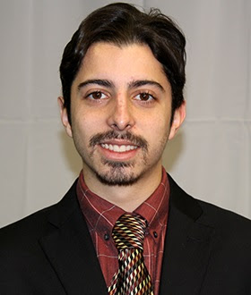

Matheus Antunes Chipanski
28 anos, solteiro, Brasileiro
Prof. Sebastião Paraná, 495 ap.38 – Vila Isabel - Curitiba – PR, CEP 80320-070
Telefones: (41) 3082-1750 / (41) 99582-6962
E-mail: matheuschipanski@hotmail.com

Objetivo Profissional
Engenheiro de Controle e Automação com mais de dois anos de experiência em desenvolvimento de produtos e melhoria de processos e iniciando no ramo de fullstack developer, atualmente empreendendo no ramo de impressoras 3D. Estou pronto para aceitar novos desafios onde eu possa empregar toda a minha experiência com as variadas ferramentas computacionais, processos de metalurgia e também no treinamento de pessoas, colaborando para alcançar as metas da empresa e valorizar os talentos individuais em qualquer equipe.
Conhecimentos Gerais
- Linguagens de programação: Arquitetura de Sistemas (Web, SOAP, REST), Assembly, GIT, C, C# (Entity Framework, Mock, MVC Framework, Swagger, Xunit tests), HTML, Java, JavaScript (ES6, Angular), MQTT, Python (Requests, BeautifulSoup, OS, Shutil), SQL (PostgreSQL), Verilog
- Ferramentas gerenciais e de projetos: DevOps, Projetos ágeis com SCRUM, SixSigma White Belt;
- Softwares: Android Studio, Angular CLI, ApacheNetBeans, AutoCAD, Blender, Cura, Elipse E3, Elipse Scada, GitHub, MatLab, Meshmixer, Microsoft Office, MikroC, MPLab, Node.js, pgAdmin, Proteus, PyCharm, SolidWorks, Visual Studio, Visual Studio Code, VisualSFM, Vivado;
- Línguas: Inglês fluente, Português Nativo.
Formação acadêmica
Bacharelado em Engenharia de Controle e Automação - Fevereiro de 2010 a Julho de 2017
Universidade Tecnológica Federal do Paraná (UTFPR), Paraná, Brasil
Intercâmbio para Bacharelado em Engenharia Elétrica
Agosto de 2014 à Julho de 2015 St Cloud State University (SCSU), St. Cloud, MN
Estudante do programa Ciências sem Fronteiras, financiado integralmente pelo CAPES e IIE
Ensino Médio Regular
Fevereiro de 2007 à dezembro de 2009 Colégio da Policia Militar do Paraná Cel.PM Felippe de Sousa Miranda
Experiência Profissional
Analista de pesquisa e desenvolvimento – Metalúrgica Rodriaço
Julho de 2017 à Junho de 2019 Alameda Nossa Senhora do Sagrado Coração, 823, Curitiba, PR, Brasil
- Desenvolvendo mais de trinta projetos de melhorias nos diferentes produtos da empresa. Implantando o processo de melhorias contínuas nas técnicas utilizadas na produção, reduções de custo com material, melhoria de segurança, padronização da produção, controle de qualidade dos produtos e acompanhamento do pós-venda;
- Prestando apoio técnico para a solução de problemas em campo como adequação da instalação elétrica e de gás das cozinhas atendidas;
- Criando e publicando revisões dos manuais para clientes e serviço técnico, fichas técnicas e esquemas elétricos para os colaboradores da fábrica, bem como apresentando conceitos de projetos e documentação para melhor controle da parte funcional dos equipamentos;
- Participando da renovação do departamento de projetos e engenharia da empresa com o treinamento da equipe de trabalho visando equilibrar o conhecimento técnico dos programas CAD, em especial Solidworks, para maior agilidade na criação dos projetos personalizados e padronização da produção e da informação no sistema;
- Divulgando boas praticas de manutenção, montagem e pré-venda de produtos elétricos de acordo com as normas e dando apoio teórico do funcionamento de cada equipamento por meio de pesquisas e conhecimentos prévios;
- Atendendo clientes e técnicos em campo para sanar duvidas sobre o funcionamento de equipamentos, participando da solução dos problemas remotamente nas áreas de elétrica, gás e refrigeração;
- Idealizando, desenhando, acompanhando a fabricação, montando, testando em laboratório e ajustando protótipos de novos equipamentos para lançar no mercado.
Estagiário – Metalúrgica Rodriaço
Janeiro de 2017 até julho de 2017 Alameda Nossa Senhora do Sagrado Coração, 823, Curitiba, PR, Brasil
- Revisando todos os documentos relativos ao funcionamento dos equipamentos de cozinhas industriais, apontando irregularidades de segurança, zelando pela observância às normas e regulamentos para serem aplicadas para a certificação dos produtos;
- Gerando toda a documentação para acompanhamento da produção, controle da qualidade, manutenção e manuais dos produtos quanto ao funcionamento dos circuitos eletromecânicos, bem como estabelecendo controle de versões dos mesmos e trabalhando na tradução de manuais dos componentes para uso interno da empresa;
- Criando um sistema automatizado coleta de medições de temperatura e umidade em uma câmara para testes. A proposta do projeto havia sido desde o princípio elevar a qualidade e confiabilidade dos testes em fábrica mostrando que seria possível fazê-lo com baixos custos. O sistema foi implementado com o uso de um Arduíno nano, interfaces produzidas à mão e um sistema supervisório operando com um cliente OPC.
Estagiário – Johnson Controls – Aeroporto Internacional de Curitiba Afonso Pena
Novembro de 2015 à Abril de 2016 São José dos Pinhais, PR, Brasil
- Aplicando, monitorando e gerando relatórios da instalação de cabeamento estruturado para a automação predial do hangar internacional do aeroporto para de controle de acesso e de detecção de incêndio;
- Controlando de estoques de materiais e participando do processo de treinamento de colaboradores para a manutenção do sistema de incêndio.
Aluno Pesquisador – ISELF – Saint Cloud State University
Maio de 2015 à Julho de 2015
St.Cloud, Minnesota, Estados Unidos
- Desenvolvendo junto à equipe de pesquisa da universidade um sensor óptico de sangramento intercranial com microcontrolador PIC 18LF4455 da Microchip;
- Criando o circuito de interface dos sensores com o controlador por meio do MPLab;
- Programando o dispositivo em nível de controlador para os periféricos, sensores externos e comunicação serial com computador por Bluetooth, em linguagem C; bem como a IHM em computador por uso de C#;
- Desenvolvendo o design do produto por meio de CAD com Solidworks e testando a aplicação por meio da produção de protótipos em impressão 3D.
Estagiário - Companhia Paranaense de Eletricidade – COPEL
Abril de 2014 à Agosto de 2014 Curitiba, Paraná, Brasil
- Atuando na programação de Sistemas Supervisórios de três novas usinas hidráulicas no estado do Paraná por meio do sistema software E3, envolvendo ativação remota de CLPs e processamento dos dados das plantas para a geração de relatórios;
- Realizando a manutenção dos computadores e da infraestrutura da rede de computadores do centro de controle;
- Desenvolvendo a duas apostilas para o a orientação e treinamento de Scada e Studio E3 para colaboradores novos e de outras áreas.
Estagiário - UTFPR
Março de 2013 à Setembro de 2013
Avenida Sete de Setembro, 3165 - Rebouças Curitiba - PR 80230-901
- Realizando a manutenção dos equipamentos e instrumentos dos laboratórios do departamento de eletrotécnica (DAELT);
- Elaborando relatórios de manutenção, planilhas de controle de materiais, documentos técnicos. Bem como propondo novos métodos de controle dos equipamentos avariados e disponibilização das salas e laboratórios por meio de sistema online;
Trabalho Voluntário
ROTARACT Rebouças - distrito 4730
Membro desde 2012 Serviços gerais de causa social Secretário durante a administração 2013/2014
- Organizando eventos e ações envolvendo contato com pessoas em situção de risco, bem como eventos de levantamento de fundos para o clube. Em cada projeto tomando a liderança de, em media quatro colaboradores;
- Transcrevendo atas de reunião, planejando cronograma de ações e gerenciando os recursos financeiros das ações em que foi escalado como líder.
Informações adicionais
- CNH categoria B;
- Conhecimento de técnicas de inteligência artificial;
- Treinado na teoria do ciclo vital de liderança – UTFPR –30 horas;
- Treinamento pela Elipse de Studio E3 – 12 horas;
- Experiência com desenvolvimento em Microcontroladores ARM, PIC, Arduino e Raspberry Pi.
- Curso online – DIO - Fullstack Developer Banco Carrefour – 96 horas - 2020
- Ciclo de reflexões SotoZen – direitos humanos com a monja Heishin Gandra - 2020